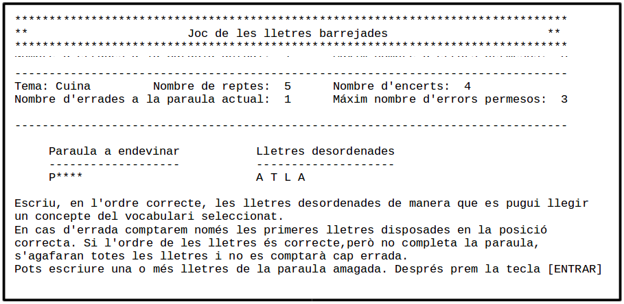

Inici activitat A502 - Estructura de dades i gestor de dades
Durant la implementació d'una aplicació, tenir clara l'estructura de dades, és probablement una de les tasques claus per garantir l'èxit del projecte, juntament amb l'anàlisi i el disseny que haureu de realitzar en la següent activitat. De moment, en aquesta, donarem només forma a les estructures que permetin gestionar les dades i implementarem les funcions bàsiques per manipular-les, assegurant que sempre es mantindrà la seva coherència.
Abans de començar, donada la importància d'aquest procés, ens hem posat en contacte amb l'empresa i ens han comentat que per aquest prototipus preveuen que seran necessàries dues estructures de dades. Una per mantenir les dades de configuració (diccionaris temàtics, tema actual d'on escollir la paraula a endevinar o el nombre màxim d'errades que es poden fer en cada repte) i l'altre per mantenir les dades del joc, des de que es comencen els reptes fins que es decideix acaba-los i es mostres les estadístiques. L'estructura de configuració ens la fan ells perquè així inclouen les dades de tres diccionaris temàtics, de manera que puguem fer proves en la nostre implementació sense necessitat d'haver d'introduir les dades manualment, ni d'haver-les d'inventar.
Us quedarà però, per definir, l'estructura per mantenir les dades del joc quan un jugador comenci una sèrie de reptes fins que decideixi parar. També us demanarem d'implementar un gestor de dades que faciliti el tractament i manipulació d'ambdues estructures, l'aportada per l'empresa i la dissenyada per vosaltres.
Tasques a realitzar- Estructura de dades i gestor de dades
Tasca Disseny i implementació de les estructures de dades
A l'activitat A501 vau veure que una classe que contingui variables, pot constituir un tipus compost i que els tipus compostos són la base de les estructures de dades de les aplicacions. A la tasca 3, vau veure diferents implementacions d'una mateixa estructura. Com ja vau constatar, les estructures complexes poden implementar-se de múltiple maneres, i segurament no existeix una única implementació millor que les altres, sinó més aviat, cal adonar-se que unes implementacions faciliten uns tractaments en detriment dels altres. L'ideal és poder escollir aquella implementació que suposi més avantatges que inconvenients per els tractaments que caldrà realitzar a la nostra aplicació.
Aquí haureu de dissenyar i implementar les estructures de dades de l'aplicació. En primer lloc caldrà que copieu al Netbeans, l'estructura que l'empresa Jocs Per Tu SCCP ens ha fet arribar i que trobareu a la classe següent:
public class DadesConfiguracio {
static final int INSTRUMENTS=0;
static final int CUINA=1;
static final int INFORMATICA=2;
String[] temes={ "Instruments", "Cuina", "Informàtica"};
String[][] paraulesTematiques={
{
"ACORDIÓ", "ARPA", "BALALAICA", "BANJO", "BATERIA", "BENDIR",
"BOMBARDA", "BOMBO", "BONGOS", "BUIRO", "CAMPANA", "CAMPANETES",
"CARRACA", "CARILLÓ", "CASCAVELLS", "CASTANYOLES", "CÍTARA",
"CLARINET", "CLAUS", "CLAVICÈMBAL", "CLAVICORDI", "CONTRABAIX",
"CORN", "CORNETA", "CUICA", "DARBUKA", "DJEMBÉ", "DOLÇAINA",
"DUFF", "FAGOT", "FLABIOL", "FLAUTA", "FLAUTÍ", "GAITA",
"GUIMBARDA", "GONG", "GRALLA", "GUITARRA", "HARMÒNICA", "KALIMBA",
"LLAÜT", "MANDOLINA", "MARAQUES", "MARIMBA", "MATRACA", "OBOÈ",
"OCARINA", "ORGUE", "PANDERETA", "PANDERO", "PIANO", "PICACANYA",
"PLATERETS", "RABELL", "SALTIRI", "SAXOFON", "TABAL", "TABALET",
"TAMBOR", "TAMBORÍ", "TAROTA", "TENORA", "TIBLE", "TIMBAL",
"TIMBALES", "TRIANGLE", "TROMBÓ", "TROMPA", "TROMPETA", "TUBA",
"VIOLA", "VIOLÍ", "VIOLONCEL", "XIFLA", "XILÒFON", "XIMBOMBA"
},{
"AGAFADOR", "AIGÜERA", "AIXETA", "AMPOLLA", "BATEDOR", "BATERIA",
"BOL", "CAFETERA", "CASSO", "CASSOLA", "COBERTERIA", "COBERTS",
"COLADOR", "COPA", "CORRO", "CRISTALLERIA", "CULLERA", "CULLEROT",
"DAVANTAL", "DESTRAL", "DRAP", "ESCORREDORA", "ESCORREPLATS",
"ESCUMADORA", "ESPÀTULA", "ESTALVI", "ESTOVALLES", "FORQUILLA",
"FRUITERA", "GANIVET", "GERRA", "GOT", "LLETERA", "LLEVATAPS",
"MANYOPLA", "MORTER", "MOTLLO", "OBREAMPOLLES", "OBRELLAUNES",
"OLLA", "PAELLA", "PEBRER", "PLAT", "PLATA", "POT", "RATLLADORA",
"RENTAPLATS", "SAFATA", "SALER", "SETRILL", "SETRILLERES", "SOPERA",
"SOTAGOT", "SUCRERA", "TALLAR", "TAP", "TAPADORA", "TASSA", "TAULA",
"TETERA", "TISORES", "TOVALLÓ", "TRENCANOUS", "VAIXELLA"
},{
"ACCÉS","ADJUNTAR","ADREÇA","ÀLIES","ALTAVEUS","ANTIVIRUS",
"APLICACIÓ", "ARQUITECTURA", "ARROVA", "AURICULAR", "BAIXAR",
"BASE DE DADES", "BIT", "BUS", "BÚSTIA ELECTRÒNICA", "BYTE",
"FIBRA", "CABLE", "CÀMERA WEB", "CARTERA ELECTRÒNICA", "CERCADOR",
"CIBERCAFÈ", "CIBERCULTURA ", "CLIC", "CODI FONT", "CODIFICACIÓ",
"COMERÇ ELECTRÒNIC ", "COMPTE", "CONTRASENYA", "CÒPIA DE SEGURETAT",
"CORREU ELECTRÒNIC ", "CORREU WEB", "DESAR", "DISC DUR", "DISC ÒPTIC",
"DISQUET", "DOMINI", "EMOTICONA", "EMULADOR", "ENCAMINADOR ",
"ENLLAÇ", "ESCÀNER", "ETIQUETA", "EXTRANET", "FINESTRA", "FITXER",
"FORMAT", "FÒRUM", "GALETA", "HIPERTEXT", "HOSTATGE", "HTML", "HTTP",
"IMPRESSORA", "INFOGRAFIA", "INFORMÀTICA", "INSTAL·LAR", "INTERFÍCIE D'USUARI",
"INTERFÍCIE GRÀFICA D'USUARI", "INTERNET", "KILOBYTE", "LLAPIS ÒPTIC ",
"LLENGUATGE", "LLIBRE ELECTRÒNIC", "LLIBRETA D'ADRECES", "LLOC WEB",
"MAPA DEL WEB", "MARCATGE", "MEGABYTE", "MEMÒRIA", "MICRÒFON",
"MICROPROCESSADOR", "MÒDEM", "MONITOR", "NAVEGAR", "NODE", "ORDINADOR",
"PORTÀTIL", "PÀGINA WEB", "PERFIL", "PERIFÈRIC", "PÍXEL", "PROCESSADOR",
"PROGRAMA", "QUADRE DE DIÀLEG", "RATOLÍ", "REALITAT VIRTUAL", "REDIRIGIR",
"RESOLUCIÓ", "ROBOT WEB", "RUTINA", "SERVIDOR", "SIMULADOR", "SIMULAR",
"SISTEMA INFORMÀTIC", "SISTEMA OPERATIU", "TALLAFOC", "TASCA", "TECLAT",
"TELEMÀTICA", "TELEVISIÓ DIGITAL", "USABILITAT", "VERIFICAR", "VERSIÓ BETA",
"VÍDEO DIGITAL", "VIDEOCONFERÈNCIA", "VIRUS", "VISITANT", "VÒXEL",
"WEB", "XARXA", "XAT", "XIFRAR ", "XIP", "ZONA D'OMBRA", "ZONA SENSIBLE"
}
};
int temaActual=0;
int nombreMaximErrades=3;
}
La classe DadesConfiguracio està composta per una matriu de cadenes de caràcters en la que a les files hi trobem cada un dels diccionaris temàtics i a les columnes les entrades d'aquests. Noteu que algunes de les entrades són paraules compostes separades per un espai. Hem preguntat quin tractament haurem de donar-li als espais, i ens comenten que cal tractar-los com si fos un caràcter més. És a dir cal incloure'ls com una lletra més i barrejar-los com la resta, perquè el jugador ha d'endevinar també la seva posició quan intenti un repte. També està composada d'un array amb els noms del temes i 3 constants que identifiquen la posició dels diccionaris dins la matriu en relació al tema i, de 2 variables més, que permeten definir quin serà el tema escollit quan es comenci a jugar i quin serà el nombre màxim d'errors que es permeten realitzar en cada repte.
Un cop copiada la classe DadesConfigració, caldrà que dissenyeu l'estructura per mantenir les dades del joc. Aquesta estructura s'haurà d'implementar en una classe independent i contendrà la informació per poder desenvolupar la sèrie de reptes iniciada per un jugador en escollir la opció de jugar, del menú principal.
A fi que us resulti molt més fàcil de decidir quina estructura caldrà implementar, us proposem que feu servir el grup de discussió reduït al que us vau incorporar a l'activitat anterior. Allà hi podreu discutir i valorar les dades que caldrà contemplar a l'estructura, de quin tipus s'hauran de declarar, etc. Es tracta només d'un grup de discussió i d'intercanvi d'idees que us ajudi prendre la vostra decisió pròpia. No cal per tant, que arribeu a cap consens, ni que tots acabeu implementat la mateixa estructura.
Si encara no tinguessiu grup, escolliu-lo ara i dirigiu-vos al ERROR - fòrum de discussió del període per començar la discussió. HEU D'EVITAR ESCRIURE EXPLÍCITAMENT L'ESTRUCTURA DE DADES pròpia del projecte, només es tracta d'expressar idees i argumentar-les. Tingueu en compte que en acabar la discussió del fòrum us hauria de quedar clar quines variables i de quin tipus han de compondre l'estructura de l'aplicació. El següent guió us ajudarà a donar consistència a la discussió. Llegiu-lo abans de participar.
Guió de discussió en el ERROR - fòrum de discussió del període
Tingueu sempre present que tal com s'indica a l'enunciat, els objectius principals del prototipus que se us han encomanat, són:
- Dades estadístiques que permetin mostrar el nombre de reptes jugats, el nombre de reptes guanyats i la taxa d'encert que això suposa.
A més, per cada repte, cal mantenir les dades necessàries per mostrar per pantalla la informació indicada a l'enunciat i que es visualitza a la imatge de la pantalla mostrada a continuació:
- I també les dades que permetin decidir si el repte s'ha acabat, ja sigui perquè el jugador ha endevinat la paraula o perquè ha superat en nombre màxim d'errors.
En base a això contesteu les següents qüestions en el fòrum:
- En relació a les dades estadístiques
- Enumereu, concepte per concepte, quines dades necessitareu per fer el càlcul de la taxa d'encert.
- Sabríeu trobar la fórmula que descrigui el càlcul de la taxa? Quines dades necessita la fórmula. Les teniu contemplades en el disseny?
- En relació a les dades de cada repte.
- Enumereu les dades que trobeu a la pantalla.
- De quin tipus creieu hauria de ser la variable que permeti mostrar la paraula a endevinar? Quines dades penseu que cal emmagatzemar en aquesta variable? Cal incloure els asteriscs que amaguen les lletres encara no descobertes com a contingut de la variable?
- Quin tipus de dades escolliríeu per mantenir les lletres desordenades que encara no s'hagin descobert?
- En referència a les dades que permeten decidir el moment en que cal donar per acabat el repte.
- Indiqueu quins són els supòsits que fan que calgui finalitzar un repte
- Quines dades són necessàries per verificar els supòsits?
Amb les conclusions que extrèieu del fòrum, implementeu l'estructura de dades que us falta.
Tasques a realitzar- Estructura de dades i gestor de dades
Tasca Implementació del gestor dades
En aquesta tasca se us demana que implementeu un gestor de dades perquè us ajudi a manipular les estructures de dades de l'aplicació. Heu de crear el gestor de dades en una classe independent que podeu anomenar GestorDades. Abans però, us demanem que llegiu les següents reflexions i consideracions sobre el tema.
Mantenir les dades juntes i organitzades en una estructura, no garanteix la coherència interna d'aquestes. La organització de les dades juga un paper molt important, però quan implementem aplicacions usant estructures de dades, és també important vetllar per la coherència de les mateixes. Tenir un disseny de dades amb una estructura impecable, amb contingut incoherent vindria a ser com redactar una frase sintàcticament ben escrita però semànticament sense sentit ("la casa caminava lentament" és un exemple de frase ben construïda sintàcticament, però semànticament errònia).
Malauradament, els errors deguts a una incoherència interna de les dades d'una estructura són molt comuns i cal trobar maneres d'evitar-los. Ja sabem que no disposem de cap vareta màgica per trobar la solució, però sempre que codifiquem ens hauríem d'imposar trobar maneres d'evitar les incoherències o, si més no, de reduir-ne la possibilitat.
incoherència en modificar les dades
Les incoherències solen produir-se perquè sovint una acció sobre les dades pot implicar canvis en diversos elements de l'estructura. Si durant la codificació ens oblidem de fer algun dels canvis necessaris, ens trobarem davant d'un error realment difícil de detectar.
Hi ha una manera d'evitar aquest tipus d'errades. Consisteix en crear funcions específiques que s'encarreguin de fer tots els canvis a la vegada. Caldrà identificar aquelles accions que modifiquin l'estructura en diversos llocs i en conseqüència siguin susceptibles de generar incoherències, i crear per aquestes una funció encarregada de fer l'acció de forma sempre complerta i correcta. És aconsellable mantenir totes les funcions específiques d'una mateixa estructura de dades agrupades en una única classe.
Imaginem que hem de gestionar una estructura que contingui una llista variable de dades. Per exemple, imaginem que hem de codificar el registre d'alumnes matriculats d'una escola. El nombre d'alumnes que es matricularan és impossible de saber a priori. Si s'opta per crear una estructura amb un comptador de matriculats, a més de l'array de dades dels alumnes, tindrem una estructura semblant a:
public class DadesAlumnes {
String[] alumnes;
int matriculats;
}
Com es pot suposar, cada cop que fem una matrícula, cal afegir el nom de l'alumne a una posició lliure de l'array alumnes i cal actualitzar el valor de l'element matriculats. També caldria fer quelcom semblant per donar de baixa una matrícula, etc.
Per gestionar aquestes accions sense errades, decidim crear una classe específica, anomenada GestorDadesAlumnes, encarregada d'implementar accions d'alt nivell sobre instancies del tipus compost DadesAlumnes:
public class GestorDadesAlumnes {
void novaMatriculaAlumne(DadesAlumnes dades, String alumne){
//Cal afegir les dades del nou alumne
dades.alumnes[dades.matriculats]=alumne;
//I també cal incrementar el comptador de matriculats
dades.matriculats++;
}
void baixaAlumne(DadesAlumnes dades, int posicioAlumneAEliminar){
//Cal traslladar l'alumne a eliminar més enllà del límit indicat pel comptador de matrícules,
//a fi quedi amagat i no s'hi pugui accedir; com si s'hagués eliminat.
for(int i=posicioAlumneAEliminar; i<dades.matriculats; i++){
String[] aux = dades.alumnes[i];
dades.alumnes[i]=dades.alumnes[i+1];
dades.alumnes[i+1] = aux;
}
//I en aquest cas, cal decrementar el comptador.
dades.matriculats--;
}
...
}
D'aquesta manera, si a la implementació de l'aplicació es fa servir sempre la funció del gestor, les dades seran sempre coherents.
incoherència en la inicialització de les dades
La inicialització de les dades d'una estructura també acostuma a ser una font d'incoherències i errades, ja que algunes vegades, abans de fer servir una instancia de tipus compost és necessari donar valors específics a alguns dels seus elements per tal que les seves dades siguin coherents, o s'ajustin al que s'espera. En ocasions n'hi haurà prou només inicialitzant un array a la dimensió correcta o instanciant els tipus compostos interns.
Per exemple, en el cas anterior de la gestió de matrícules, necessitarem dimensionar l'array d'alumnes a la mida màxima abans de començar a treballar. Com que la mida màxima dependrà del renom de l'escola, del municipi/barri on estigui i fins i tot de l'any en que es faci la matrícula, es pot optar per deixar la dimensió configurable en el moment de començar. Podem encarregar al gestor de dades GestorDadesAlumnes l'acció de crear i d'inicialitzar una instancia dimensionada a una mida especificada des de paràmetre, estimada per l'ajuntament:
DadesAlumnes crearDadesAlumnes(int dimensio){
DadesAlumnes dades = new DadesAlumnes();
dades.alumnes=new String[dimensio];
return dades;
}
Recordeu que en JAVA, tots els tipus simples (short, int, long, float, double, char, ...) s'inicialitzem sempre a zero i per tant, aquest tipus de dades, només precisaran inicialització en cas d'haver-se s'inicialitzar amb valors diferents de zero.
altres usos del gestor de dades
La classe especifica de gestió de les dades de l'estructura, pot contenir a més de les funcions que ajudin a minimitzar la incoherència, totes aquelles altres que considerem útils per ajudar-nos a manipular l'estructura de dades. De fet, aquestes classes poden admetre funcions de consulta, de càlcul, etc. Sovint és molt més senzill cridar una funció i esperar el resultat que haver de pensar com tractar l'estructura per obtenir el resultat desitjat, sobretot si cal repetir diverses vegades un tractament determinat. Tot allò que ens ajudi a gestionar les dades específiques de l'estructura pot tenir cabuda dins la classe.
Un cop llegit el text, us demanem que contesteu les següents preguntes en el vostre fòrum:
Guió de discussió en el ERROR - fòrum de discussió del període
- Analitzeu totes les dades d'ambdues estructures de dades i els requeriments de l'enunciat. Creieu que alguna d'elles necessita crear-se usant un funció específica? Per exemple, l'estructura de la configuració té una dada per indicar quin és el nombre màxim d'errades en cada repte i una altra per saber quin és el tema d'on cal treure les paraules en el moment d'iniciar la sèrie de reptes. Però a l'enunciat especifica que: "Per defecte, el nombre d'errades màxim és 3 i el tema s'escollirà a l'atzar, just en iniciar el joc.". Creieu que això fa candidata a la classe DadesConfiguracio a ser creada mitjançant una funció específica que asseguri la seva coherència? Raona la resposta.
- Creus que l'altre estructura de dades conté dades sensibles de ser inicialitzades en el moment de la creació? Quines diries que són aquestes dades?
- A banda del moment de crear les instancies, analitzeu també quins processos de la implementació requereixen manipular les dades i si en algun d'aquests casos es manipulen diverses variables de manera que l'oblit de la modificació d'una d'elles produís un incoherència interna.
- Analitzeu els canvis que cal fer en el moment d'iniciar un repte. És a dir, en el moment d'escollir la opció jugar del menú principal i després de confirmar la continuïtat, cada cop que un dels reptes hagi finalitzat. Els canvis justifiquen la creació d'una funció específica evitar la incoherència de les dades?
- Analitzeu també els canvis a realitzar cada cop que calgui actualitzar un intent del jugador d'endevinar una o més lletres, verificant si l'intent és o no sancionable, si cal amb l'intent s'ha endevinat la paraula, etc.
- No deixeu d'analitzar tampoc l'actualització de les dades un cop finalitzat cada repte.
- Centreu-vos ara amb els paràmetres que considereu que hauran de rebre les funcions que hàgiu decidit implementar. Hi haurà alguna d'aquestes funcions que no rebi una instància d'alguna de les estructures de dades? Per què?
Un cop finalitzada la discussió, us toca implementar la classe GestorDades amb les conclusions i les reflexions que n'hàgiu tret.
Lliurament - Estructura de dades i gestor de dades
Baixa't l' d'aquesta activitat i omple'l per poder fer el lliurament, ja que bàsicament, aquesta és una activitat de seguiment que serveix com indicador per verificar que avanceu correctament. El professor restarà atent al lliurament de l'informe on indicaràs si has aconseguit implementar l'estructura de dades, les funcions del gestor de dades i les biblioteques que se t'han demanat a les diverses tasques. En cas que hagis tingut dificultats, pots exposar-les a l'informe a fi que puguem donar-te una resposta durant la retroacció.
Només cal que enviïs l'informe. Malgrat tot, si ho creus necessari, pots enviar més d'un fitxer empaquetant-los tots junts en un fitxer ZIP que penjareu a la .
Es recomana acabar i lliurar aquesta activitat abans de la data recomanada: i en tot cas mai després de la data límit: .
És molt important per el vostre aprenentatge que feu els exercicis proposats, que ompliu l'informe i que el lliureu, ja que el professor podrà avaluar l'evolució del projecte i si cal us donarà un cop de mà.
Com continuar - Estructura de dades i gestor de dades
Passeu a la següent activitat
Si us cal, també podeu saltar a la taula d'activitats per accedir a qualsevol altra activitat.